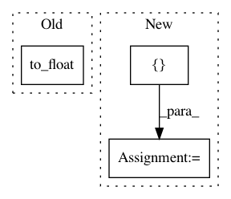

f55217e5fee88bc38e58e62e886f79e561c4d069,texar/losses/losses_utils.py,,reduce_batch_time,#Any#Any#Any#Any#Any#Any#,110
Before Change
if reduce_batch:
sequence = tf.reduce_sum(sequence, axis=[0])
if average_across_batch:
sequence = sequence / tf.to_float(tf.shape(sequence_length)[0])
return sequence
def reduce_dimensions(tensor, average_axes=None, sum_axes=None, keepdims=None):
After Change
sequence = tf.reduce_sum(sequence, axis=[1])
elif average_across_timesteps:
if sequence_length is None:
sequence = tf.reduce_mean(sequence, axis=[1])
else:
sequence = tf.reduce_sum(sequence, axis=[1])
if average_across_timesteps:
sequence = sequence / tf.to_float(sequence_length)
if sum_over_batch:
sequence = tf.reduce_sum(sequence, axis=[0])
elif average_across_batch:
sequence = tf.reduce_mean(sequence, axis=[0])
return sequence
In pattern: SUPERPATTERN
Frequency: 3
Non-data size: 3
Instances
Project Name: asyml/texar
Commit Name: f55217e5fee88bc38e58e62e886f79e561c4d069
Time: 2018-08-14
Author: zhitinghu@gmail.com
File Name: texar/losses/losses_utils.py
Class Name:
Method Name: reduce_batch_time
Project Name: NifTK/NiftyNet
Commit Name: addcb13fb3dcd2cdbc32ac81611a78ac1c19b02f
Time: 2017-08-23
Author: egibson@cs.ucl.ac.uk
File Name: niftynet/network/dense_vnet.py
Class Name: DenseVNet
Method Name: layer_op
Project Name: NifTK/NiftyNet
Commit Name: 0c63b9dcd7ee3da39c74379a01d16e3a360d3506
Time: 2017-10-26
Author: wenqi.li@ucl.ac.uk
File Name: niftynet/layer/resampler.py
Class Name: ResamplerLayer
Method Name: _resample_inv_dst_weighting